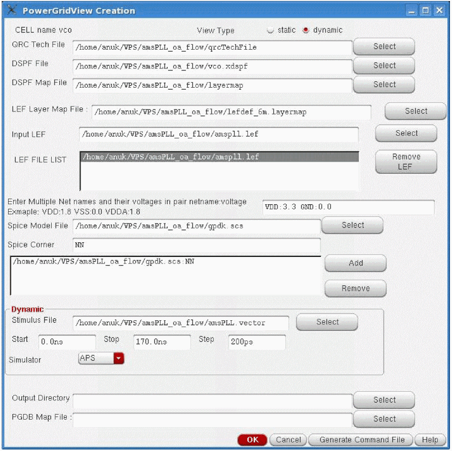
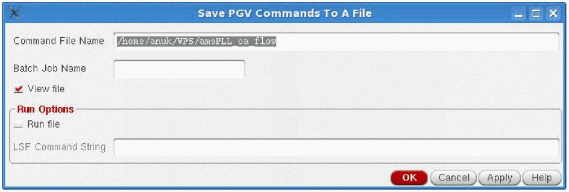

8
Power-Grid View Creation
- Overview
- Data Requirements and Flow for PGV Creation
- Creating Power-Grid Views
- Writing Out a PGV Command File
- Outputs of PGV Generation
- File Formats
Overview
Increasing operating frequency and density of IC designs increases the need for IR drop and Electromigration (EM) power-grid analysis. Power-grid signoff analysis is provided by Voltus in the digital domain, and Power IR/EM in the analog domain.
Power IR/EM provides the ability to create power-grid views (PGVs) of an analog design block that can be used in Voltus for mixed-signal analysis. PGVs contain the following:
- A model view of the design
- Information about the power ports of the cell or block
- Information about the internal power grid, intrinsic capacitance, and the tap current distribution within the cell or block
PGVs provide an accurate characterization of capacitance and currents, and power-grid extraction. Voltus uses these views to model power rail and power distribution information for each instance of the cell in the design for dynamic or static full-chip power-grid analysis.
For more information about PGVs, refer to the “Power-Grid Library Generation” chapter in the Voltus IC Power Integrity Solution User Guide.
Data Requirements and Flow for PGV Creation
The following table shows the required inputs for generating power-grid views in Power IR/EM. The inputs are categorized into the following: 1) from the design; and 2) from the user.
The following diagram illustrates the flow of PGV creation in Power IR/EM.
Figure 8-1 Power-Grid View Generation Flow in Power IR/EM
Creating Power-Grid Views
To create PGVs in Power IR/EM, perform the following steps:
- In the Virtuoso Layout Suite L, select VPS-L- Analyze Extracted View Pin(s).
-
From the drop-down list, select VPS-LibGen Power Grid Views Creation. The PowerGridView Creation form opens. This form is shown below.
Figure 8-2 PowerGridView Creation Form - The CELL name field is already populated with the name of the cell for which the power-grid view is being created. This is chosen from the open extracted view.
- In View Type, choose either static or dynamic, to specify the type of analysis for which you want to generate the view.
- Select the QRC Tech File, which is the name of the QRC technology file that will be used for PGV generation.
- Select the DSPF File, which is the the third party or xDSPF netlist file that is to be imported.
-
Select the DSPF Map File, which is the layermap file that has layer type and layer stack information of the DPSF file, from the top-most layer to the bottom-most layer. The Layer type column specifies the type of layer: metal, via, or local; while the Process layername column specifies the name of the layer. An example of the DSPF map file is shown in the File Formats section.
- Specify the LEF Layer Map File, which contains the mapping information for the layer names in the LEF file to the layer names in the technology file. An example file is shown in the File Formats section.
- Select the technology LEF files and the Macro LEF files in the Input LEF field. The technology LEF files contain LEF information for the technology data, and the Macro LEF files contain the LEF data for the design. The selected filenames will appear in the LEF FILE LIST. Click Remove LEF to remove any file from the LEF FILE LIST.
-
In the Enter Multiple Net names and their voltages in pair netname:voltage field, type the names of the nets and their corresponding voltages in the specified format. For example,
VDD:1.8 VSS:0.0.You can specify multiple net names separated by a space. -
To specify the Spice Models information, perform the following steps:
- Select the Spice Model File used by the SPICE netlist.
- Type the corresponding Spice Corner to be used from the model file.
- Click Add to add the spice model – spice corner pair to the table.
- Continue till all models and their corresponding corners are specified.
- Click Remove to remove a pair from the table.
-
The Dynamic group box is activated only when you choose the View type as dynamic. In this group box, provide the specifications for dynamic PGV generation.
- Select the Stimulus File, which is the input file for the simulator. Choose this option to specify the vector information to be used for simulation.
- Specify the Start, Stop time in nanoseconds (ns), and Step Size in picoseconds (ps).This specifies the simulation start time, stop time, and step size. The default value of step size is 200 ps.
- Choose either APS or Ultrasim in the Simulator cyclic field. By default, APS is selected.
-
Select the Output Directory to write the output data. By default, the power-grid views are stored in the work directory.
- Select the PGDB Map File, which is the layermap file that contains the mapping information between the PGDB layer names and the layer names in the technology file. This file is required only when the layer names in the PGDB are different from the layer names in the technology file. An example of the PGDB layermap file is shown in the File Formats section.
- Click OK.
Writing Out a PGV Command File
To generate a batch mode command file for PGV generation, follow these steps:
-
In the PowerGridView Creation form, click Generate Command File. The Save PGV Commands To A File form opens. This form is shown below.
Figure 8-3 PGV Command File Generation -
In this form, specify the Command File Name. If the command filename is not specified, the software either uses
<Batch job Name>.cmdas the default command file name, or if the batch job name is not provided, then it usesvsaPGVBatch.cmdas the default command filename. - Specify the Batch Job Name, which is a unique job name to distinguish between different jobs. This allows you to run multiple command files – generated by different job names – in the same working directory.
-
Click View file to view the command file. This option is selected by default. If you do not want to view the command file, you can change the default selection of this option by setting the _vsaUncheckViewFile
true. - In the Run Options group box, click Run file to run the generated command file in the background.
-
Specify the Local Server Farm or the LSF Command String , which is the name of the wrapper string command that will launch Power IR/EM in the batch mode. For example, you can specify
bsub -q lnx64as the LSF command string. You can also specify the LSF string by using the environment variable, _vsaLSFMachineString. When this environment variable is set, the LSF Command String field is pre-filled with the specified command. - Click OK.
Sample Batch Command file
A sample PGV batch command file is shown below:
;vsa batch mode command file
;commands for PGV generation
_vsa_testbench_lib_cell_view "amsPLL" "TB1_vco_single" "schematic"
_vsa_extracted_lib_cell_view "amsPLL" "vco" "av_R"
_vsa_pgv_output_directory "dyn_pgv"
_vsa_pgv_tech_file "qrcTechFile"
_vsa_pgv_lef_layer_map_file "leflayermap"
_vsa_pgv_pgdb_map_file “pgdb.map”
_vsa_pgv_net "vdd!" " 1.2"
_vsa_pgv_net "gnd!" "0.0"
_vsa_pgv_lef_files "amspll.lef tech.lef"
_vsa_pgv_dynamic_options "amspll.vector" "0.0ns" "120.0ns" "250ps"
_vsa_pgv_spice_model "cln90g_lk.l" "TT tt_hvt"
_vsa_pgv_spice_model "cln90g_sr.l" "TT_sr"
_vsa_pgv_dspf_file "vco.xdspf"
_vsa_pgv_dspf_layermap "layermap_dspf"
_vsa_create_pgv
exit
Outputs of PGV Generation
Following are the outputs of PGV generation in Power IR/EM:
- A binary database that contains the following:
- Text report and summary file with detailed information about the power-grid views.
File Formats
This section lists the file formats of the layermap files specified during PGV generation.
DSPF Layermap File
This layermap file contains the layer type and layer stack information for the DSPF from the top-most layer to the bottom-most layer. If this order is not followed, the PGDB will not be created.
Sample file name: layermap_dspf.txt
Layer type specifies the type of layer: metal, via, or local
Process layername specifies the name of the layer
# Layer Process
# type layername
# --------- ------------
metal m4
via via3
metal m3
via via2
metal m2
via via1
metal m1
metal po
metal mdtap
LEF Layermap File
The LEF layermap file contains the mapping information to map the layer names in the LEF file to the layer names in the technology file.
Sample file name: lefdef.layermap
type technology_layer_name lefdef lef_layer_name
type specifies the type of library layer. It can be poly, via, metal, or diff.
technology_layer_name specifies the name of the library layer that is to be mapped to the LEF layer.
lefdef specifies the keyword for the LEF layer mapping.
lef_layer_name specifies the name of the LEF layer to map to the library layer.
#type technology_layer_name lefdef lef_layer_name
#--- --------------------- ------ --------------
metal M1 lefdef M1
via VIA1 lefdef VIA1
metal M2 lefdef M2
via VIA2 lefdef VIA2
metal M3 lefdef M3
via VIA3 lefdef VIA3
metal M4 lefdef M4
via VIA4 lefdef VIA4
metal M5 lefdef M5
via VIA5 lefdef VIA5
metal M6 lefdef M6
via VIA6 lefdef VIA6
metal M7 lefdef M7
via VIA7 lefdef VIA7
metal M8 lefdef M8
via VIA8 lefdef VIA8
metal M9 lefdef M9
poly PO lefdef PO
via polyCont lefdef CO
PGDB Layermap File
A layer mapping file is required for the Rail Analysis library generation flow. The PGDB layermap file contains the mapping information to map the PGDB layer names to the layer names in the technology file.
In the GUI, you can specify this file in the PowerGridView Creation form.
type technology_layer_name pgdb pgdb_layer_name
type specifies the type of library layer. It can be poly/via/metal/diff.
technology_layer_name specifies the name of the library layer to map to the PGDB layer name.
pgdb specifies the keyword for the PGDB layer mapping.
pgdb_layer_name specifies the name of the PGDB layer.
#type technology_layer_name pgdb pgdb_layer_name
#--- --------------------- ---- ---------------
metal M4 pgdb M4
via VIA3 pgdb VIA3
metal M3 pgdb M3
via VIA2 pgdb VIA2
metal M2 pgdb M2
via VIA1 pgdb VIA1
metal M1 pgdb M1
poly PO pgdb PO
via polyCont pgdb CO
Return to top